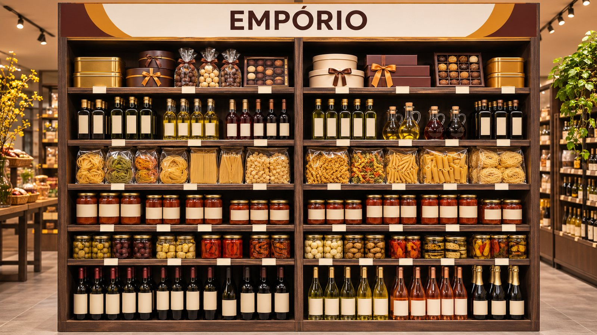

Novembro de 2026 · 75 LAB para Divina Terra · Imagem: simulação ilustrativa
O mapa da jornada
Quatro perguntas, uma viagem
O diagnóstico de Pinheiros foi entregue em outubro e não se repete aqui. A viagem começa com um rápido contexto da rede e do mercado.
Início
Antes de partir
O contexto da viagem
Quem é a rede hoje, o que mudou no último mês e o que o mercado está fazendo. É o que torna as escolhas seguintes óbvias.
A rede em números
Três redes dentro de uma
O pedido de 29/10
O mercado em movimento
Com que base decidimos
A rede hoje
Uma rede grande, nascida no Sul e presente no Brasil
80lojas ativas
13estados
+100 milclientes por mês
+R$ 130 miem 2025, segundo a rede
Como as 80 lojas se dividem por faturamento mensal
Diamante9 lojas · R$ 200 a 700 mil
Platina18 lojas · R$ 125 a 200 mil
Ouro19 lojas · R$ 80 a 125 mil
Prata15 lojas · R$ 55 a 80 mil
Cobre19 lojas · até R$ 55 mil
Para a estratégia, isso diz duas coisas: a solução precisa caber em lojas de 40 a 150 m², e a rede é grande o bastante para negociar como rede.
Fonte: Presença de Lojas por Estado, Jan a Mai/2026; Clusterização de Lojas, 1º semestre de 2026; Apresentação Institucional, p. 9; Portal do Franchising, 18/03/2026; M2 Lojas 2026.
Cada R$ 100 no caixa, por região
Não é uma rede, são três, e cada uma pede uma direção
Sul
49 lojas da base, R$ 49 mi em 11 meses
SuplementoR$ 48
GranelR$ 26
Despensa e outrosR$ 26
Direção: proteger o granel, que já é motor, e somar o empório para aumentar a cesta.
Sudeste
11 lojas da base, R$ 13 mi em 11 meses
SuplementoR$ 59
GranelR$ 10
Despensa e outrosR$ 31
Direção: maior urgência. Abrir o segundo motor com granel e empório, em cidade com público para isso.
Norte, Nordeste e Centro-Oeste
11 lojas da base, R$ 9 mi em 11 meses
SuplementoR$ 52
GranelR$ 17
Despensa e outrosR$ 31
Direção: onde há pouco acesso a importados, como Francine lembrou, o empório é novidade: testar com cautela e olhar a logística.
Fonte: relatório de vendas, 11/2025 a 09/2026, 71 lojas. Faltam 11 lojas nesta base, entre elas Holambra e Belém. Direções: proposta da 75 LAB.
O que mudou
A rede pediu para pensar antes de rolar
“Não faz sentido fazer todo um desenho agora, rolar para a rede inteira e janeiro aparecer com o gourmet formatado.”
Francine Tolotti, 29/10/2026
23/10Diagnóstico entregue: a rede vê a concentração da venda.
27/10Reunião com franqueados de São Paulo. Marcos: “já dá para incluir o empório?”.
29/10A rede pede reposicionamento e planograma juntos.
DezembroO compromisso segue: planograma entregue, agora com empório.
Clique para ver a resposta a cada pedido
Fonte: reunião de alinhamento de 29/10/2026, transcrição e gravação.
O mercado
A categoria cresce e muda de lugar. A rede responde
+15%
O mercado cresceu
Suplementos somaram R$ 7,6 bi em 2025, e a projeção é R$ 13,8 bi em 2030.
Resposta: suplemento continua central.
8 em 100
A compra se espalhou
Em pesquisa, 8 de 100 compram em loja especializada; 48 em farmácia e 24 na internet.
Resposta: ganhar pela conversa e pela curadoria.
+124%
O mercado alimentar chegou
Whey cresceu 124% e creatina, 89%, no varejo alimentar em 2025. O Assaí virou suplementação em pilar.
Resposta: preço de referência nos itens comparados.
+105%
O whey encareceu
O insumo mais que dobrou em um ano. Fabricantes não veem queda antes de 2027, e as margens apertam.
Resposta: novos motores de venda e de margem.
Fonte: Brasnutri/Euromonitor (Revista Suplementação, 23/03/2026); IFEPEC/Febrafar, 1.200 consumidores, declaração de compra, instituto ligado a farmácias (Panorama Farmacêutico, 14/07/2026); Scanntech (Agora RN); Giro News; StoneX (Terra, 26/05/2026); MilkPoint (PowerMix, 15/10/2026).
A base
Lemos tudo o que a rede mandou, e dizemos o que falta
603.720linhas de venda por produto, loja e mês
R$ 77,4 mianalisados, de out/25 a out/26
22.155produtos com venda
1.470marcas com venda
10plantas de loja medidas
35referências de marketing e trade
Também lemos o padrão de 16 setores, o posicionamento de marca, 8 guias de execução, 2 encartes, 7 catálogos e a reunião com a rede.
O que ainda não veio
27%
É o peso das 11 lojas fora do relatório de vendas, incluindo 6 das 9 Diamante e Holambra. Também faltam cupons e custo: por isso frequência e margem aparecem como hipótese.
Belém Plaza, Itajaí, Capão da Canoa
Iguatemi, Santa Cruz, Xangri-Lá e Max
Holambra, S. J. dos Campos, Bauru, F. Beltrão
Fonte: relatório de vendas por SKU, loja e mês (23/10/2026); Clusterização de Lojas, 1º semestre de 2026; estudo de base da 75 LAB, com a lista de referências. Empório e setores: classificação da 75 LAB, primeira passada, a validar com compras.
1
Capítulo 1
Para onde vamos
Antes de falar de gôndola, o destino. É ele que decide tudo o que vem depois.
O destino em uma frase
Três motivos para entrar na loja
Como fica a venda lá na frente
A visita de uma cliente, no futuro
O destino
O empório de quem se cuida.
A saúde continua sendo a porta de entrada. O prazer de comer bem, receber e presentear vira mais um motivo para voltar.
Não muda a marca: The Healthy Place e “Da nutrição ao estilo de vida” continuam valendo. O documento de marca já fala em “empório de iguarias saudáveis”. Agora a gôndola cumpre.
Na redeSlogan e território já estão no Posicionamento de Marca.
No mercadoNenhum concorrente junta empório curado e conversa sobre saúde.
Na teoriaPosicionamento é ocupar um lugar claro na cabeça do cliente (Ries e Trout, 1981).
Fonte: Posicionamento de Marca, p. 23 e 24; mapa de concorrência da 75 LAB a partir da reunião de 29/10/2026; Ries e Trout, Positioning, 1981. Frase de trabalho, sujeita a aprovação.
A estratégia competitiva
O destino é um lugar que ninguém ocupa
Clique para comparar
Leitura: a farmácia ganha em conveniência e está em toda esquina. Não dá para vencer aí. Ela perde em explicação, e ali a rede já é forte.
Leitura: Hortisabor, Santa Luzia e Zaffari têm variedade e prazer, mas não têm quem explique ômega-3. É a fronteira mais próxima do destino.
Leitura: a internet ganha em preço e variedade. Perde em tudo o que precisa de gente e de loja: conversa, prova e presente pronto.
Leitura: a rede não precisa virar a mais barata nem a maior. Sobe em curadoria de prazer e em experiência, e mantém o que já é dela.
Na redeMentoria e Curadoria já são pilares imutáveis da marca.
No mercadoFrancine visitou o Hortisabor: muito suplemento em pontas, adega e hortifruti. É a referência de variedade.
Na teoriaCurva de valor: sair da briga, subir no que ninguém oferece (Kim e Mauborgne, 2005).
Fonte: Kim e Mauborgne, A Estratégia do Oceano Azul, 2005; Posicionamento de Marca, p. 17; reunião de 29/10/2026. As notas de 1 a 5 são leitura qualitativa da 75 LAB, não medição: servem para mostrar a lógica e devem ser validadas com a rede e com clientes.
A estratégia em uma tela
Estratégia é escolher, e estas são as escolhas
O que queremos serO empório de quem se cuida: a primeira loja que vem à cabeça para cuidar da saúde, repor a despensa e receber bem.
Onde vamos jogarA cliente que já entra, em três ocasiões: cuidar, abastecer e celebrar. Onde não: briga de preço em tudo, adega grande, balcão de frios, hortifruti.
Como vamos ganharConversa que ninguém oferece, curadoria que escolhe por ela e loja que se explica sozinha, com preço justo nos produtos que ela compara.
O que precisamos terÁrvore de categorias, receita de planograma, comitê de curadoria, parceiro de empório, treinamento e negociação de rede.
Como vamos medirEmpório na venda, venda por módulo, venda contra a loja-espelho, itens por cupom e nota de auditoria, toda semana, no painel do piloto.
Na redeA meta de marca é ser top of mind em 10 anos: a primeira lembrança da categoria.
No mercadoA falta de foco custa caro: a crise do St Marche foi ligada à expansão mal planejada, não à categoria.
Na teoriaCascata de escolhas estratégicas (Lafley e Martin, Playing to Win, 2013).
Fonte: Lafley e Martin, Playing to Win, Harvard Business Review Press, 2013; Posicionamento de Marca, p. 4; O Tempo, 24/06/2026; proposta da 75 LAB, a validar com a rede.
A loja no destino
Uma loja com três motivos para a cliente entrar
Cuidar
“Preciso de ajuda para escolher o que tomar.” Suplemento com a conversa que ninguém mais oferece.
A cada 30 a 40 dias
Abastecer
“Vou repor o de casa.” Granel, barrinhas, cafés e chás: a compra de rotina.
Toda semana
Celebrar
“Vou receber, cozinhar, dar um presente.” Azeite, massa, chocolate, vinho, com curadoria.
Em cada ocasião
Na redeFrancine: a barrinha faz o cliente voltar toda semana; o suplemento, em cerca de 40 dias.
No mercadoNos minimercados, o fluxo de clientes caiu 2,5% em 2025. Quem dá mais motivos de visita protege a loja.
Na teoriaMarca cresce quando é lembrada em mais situações de compra (Romaniuk e Sharp, category entry points).
Fonte: reunião de 29/10/2026; Scanntech (Mercado&Consumo, 27/01/2026); Sharp, How Brands Grow, 2010; Romaniuk e Sharp, How Brands Grow Part 2, 2016. Cada ponto é uma semana de um trimestre, ilustrativo.
Cada R$ 100 no caixa
A loja deixa de andar com um motor só
Hoje
R$ 50Suplemento
R$ 22Granel
R$ 26Despensa e outros
R$ 2Empório
Destino
R$ 44Suplemento
R$ 26Granel
R$ 22Despensa e outros
R$ 8Empório
4 vezes
é o quanto o empório precisa crescer. Parece muito, mas já há loja da rede a meio caminho disso.
+R$ 5 mi
por ano, em cenário-base nas 71 lojas analisadas. Simulação, que o piloto vai confirmar ou corrigir.
2028
é o horizonte de trabalho. A meta é uma direção para decidir hoje, não uma promessa: o número firme sai do piloto.
Fonte: relatório de vendas por SKU, loja e mês, 11/2025 a 09/2026 (71 lojas). Empório: classificação da 75 LAB, primeira passada. Simulação: empório 8%, granel 26%, metade do crescimento como venda nova. Detalhe no capítulo 4.
Visualize o destino
A mesma loja, com uma história a mais
Mesa do mês, no vão central

Dois módulos de empórioPlacas que se leem da porta
Simulações ilustrativas geradas por inteligência artificial a partir das fotos da visita a Pinheiros (14/10/2026), sem marcas reais. Ainda não são o projeto executivo: servem para visualizar a ideia. Clique para ampliar.
Uma terça-feira, lá na frente
Ela veio pelo ômega. Sai com o jantar de sexta
1
Encontra sozinha
A placa de “Ômegas” se lê da porta. Em segundos ela está no lugar certo.
2
Conversa e decide
A atendente explica qual é o dela. Isso a farmácia não faz.
3
Prova uma castanha
No caminho, o granel com potinho de prova. Leva para a semana.
4
Para na mesa
No meio da loja, a mesa do mês: azeite, massa e um vinho orgânico.
5
Volta na semana seguinte
Pela castanha, pela barrinha, e porque agora a loja também é onde ela busca presente.
“Eu tenho estilo de vida saudável, como queijo, bebo vinho, como macarrão gostoso.”
Francine, falando como cliente, 29/10. É esta a pessoa que já entra na loja.
Na rede+100 mil clientes por mês já entram nas lojas.
No mercadoEm farmácia e mercado, a orientação sobre suplemento é limitada, como Francine observou nas visitas.
Na teoriaQuanto mais a pessoa percorre a loja, mais compra sem ter planejado (Hui e outros, 2013).
Fonte: Apresentação Institucional, p. 9; reunião de 29/10/2026; Hui, Inman, Huang e Suher, Journal of Marketing, 2013. Cena ilustrativa do destino pretendido.
2
Capítulo 2
Por que vamos
Seis razões para escolher esse caminho. Cada uma se apoia em três bases: o que a rede vive, o que o mercado mostra e o que a teoria ensina.
A cliente, o caminho mais seguro e o que ninguém copia
O espaço, a prova dentro de casa e as portas abertas
O que ainda precisa ser testado
1 Razão um
Quem se cuida se permite um prazer
Cuidar da saúde e aproveitar a vida não são opostos. A pesquisa mostra que fazer algo bom para si dá “licença” para o prazer. Por isso o empório combina com quem já entra na loja.
Quantos escolheram o item de prazer, em um experimento
Sem ter feito nada virtuoso antes28%
Depois de um gesto virtuoso57%
Na redeFrancine, como cliente: “tenho estilo de vida saudável, como queijo, bebo vinho, como macarrão gostoso”.
No mercadoNo vinho, o preço do premium subiu 10% e o de entrada caiu 3%. Há quem pague mais por qualidade.
Na teoriaEfeito de licença (Khan e Dhar, 2006) e o “novo luxo”: pagar mais no que importa (Silverstein e Fiske, 2003).
Fonte: Khan e Dhar, Journal of Marketing Research, 2006, estudo 1 da versão de trabalho (57,4% e 27,7%, escolha de um produto de grife); Silverstein e Fiske, HBR, 2003; Bloomberg Línea, 12/03/2026; reunião de 29/10/2026. O experimento não foi feito em loja de alimentos: é um princípio, a ser testado no piloto.
2 Razão dois
Vender mais para quem já entra é o caminho mais curto
Produtos de hojeProdutos novosClientes de hoje
Vender mais do mesmoÉ disputar suplemento com quem tem mais escala. Segue, mas tem limite.
Vender coisas novas para a mesma clienteEste é o empório. A cliente e a loja já existem; só falta a oferta.
Clientes novos
Abrir novas praçasÉ a expansão que a rede já faz, lojas novas.
Produto novo para cliente novoO caminho de maior risco. Não é o caso aqui.
+100 mil
clientes por mês já entram nas lojas. É o ativo de partida.
Na redeEmpório de hoje é só 1,9% da venda: há espaço para crescer sem depender de loja nova.
No mercadoMundo Verde reformou 3 lojas com degustação e relata cerca de 20% a mais em algumas.
Na teoriaMatriz de crescimento: produto novo para mercado atual (Ansoff, 1957).
Fonte: Ansoff, HBR, 1957 (a ordem de risco vem de leituras posteriores); Apresentação Institucional, p. 9; relatório de vendas, 71 lojas; Business Moment, 11/09/2026, declaração da empresa, sem isolar o efeito do mix.
3 Razão três
Preço todos têm. A conversa e a curadoria, não
De cada 100 consumidores de suplemento, onde dizem que compram. O mercado cresceu 15% em 2025: há muita compra acontecendo, em muitos lugares.
Nos produtos que a cliente compara. Sem isso, ela nem considera a loja.
Onde ganhar
Na mentora que explica e na curadoria que escolhe por ela: suplemento e, agora, empório.
Na redeMentoria no Atendimento e Curadoria Confiável já são pilares imutáveis da marca.
No mercadoFrancine: Supercoffee ninguém precisa explicar; ômega-3 tem para coração, para cérebro, “5 milhões de coisas”.
Na teoriaMarca forte empata no básico e se diferencia onde importa (Keller, Sternthal e Tybout, 2002; Porter, 1980).
Fonte: IFEPEC/Febrafar, 1.200 consumidores, declaração de compra, instituto ligado a farmácias (Panorama Farmacêutico, 14/07/2026; 5% em outros); Brasnutri/Euromonitor, 23/03/2026; Posicionamento de Marca, p. 17; HBR, 2002; Porter, Competitive Strategy, 1980.
4 Razão quatro
O espaço do empório já está na loja
De cada 100 produtos, estes 9...
...fazem 80 de cada 100 reais de venda
Cabe sem obra. Numa loja de 50 a 80 m², cerca de 540 produtos fazem 80% da venda, de 1.870 em exposição.
Nada de queima. Sai aos poucos, com regra e um a um. Entra e sai é decidido por mês.
E se a cliente sentir falta? O corte respeita os favoritos dela. Quem perde o favorito percebe. Por isso cada saída passa por três perguntas: traz a cliente de volta? Completa a cesta? Tem substituto?
Na rede924 marcas somam 0,9% da venda, e 62% do cadastro não vendeu em 13 meses. Francine: “vamos descontinuar umas 400”.
No mercadoA Casa Santa Luzia usa 2.200 m² para 30 mil itens. Em 70 m², curadoria não é opção, é o negócio.
Na teoriaDá para cortar itens de baixa venda sem a cliente sentir menos variedade (Broniarczyk, Hoyer e McAlister, 1998).
Fonte: relatório de vendas (2.006 de 22.155 SKUs; mediana de lojas de 50 a 80 m²); Produtos cadastrados, 07/10/2026; SA+, 20/05/2026; Broniarczyk e outros, JMR, 1998, via fontes secundárias. Há estudo em que cortar sortimento reduziu a venda (Borle e outros, Marketing Science, 2005): por isso o corte passa pelo piloto.
5 Razão cinco
Uma loja da rede já está lá
1,9%Média da rede
2,9%Alphaville
6,8%Vila Madalena
8%Destino
Vila Madalena tem 64 m² e já vende 3,6 vezes a média em empório, com chocolate de origem e café especial. Em tamanho de loja, dá para a rede inteira.
Holambra, com público turista, já trabalha Biscoff e Milka. Alphaville quer ampliar empório. Há franqueadas puxando antes do sistema existir.
Na redeWarabu e Amarelo Café puxam o empório de Vila Madalena.
No mercadoHirota em Casa: 30 a 50 m², cerca de 700 itens, com bebidas, frios e laticínios perto de 50% da receita.
Na teoriaToda mudança começa pelos primeiros que aderem, e a rede copia o que vê dar certo (Rogers, 1962).
Fonte: relatório de vendas, 11/2025 a 09/2026, classificação de empório da 75 LAB; reunião de 29/10/2026; Giro News, 24/03/2026; Rogers, Diffusion of Innovations, 1962. Vila Madalena: venda total menor que a média de lojas, então o percentual é sinal de caminho, não meta de receita.
6 Razão seis
O mercado abre portas para quem tem curadoria
Azeite
R$ 100antes
R$ 8312 meses depois
O preço caiu 17%, e a fiscalização cresceu: 14 ocorrências em 2025.
Procedência vira motivo de compra.
Vinho
−3%preço de entrada
+10%preço do premium
R$ 21,1 bi em 2025. Abaixo de R$ 30, mercado domina.
Entrar de R$ 50 para cima, com poucos rótulos.
Chocolate
R$ 1.100antes
R$ 330em 2026
A arroba do cacau caiu, e a importação de chocolate somou US$ 227 mi em 2025.
Maior bloco da rede: origem e importado.
Queijo
5,7 kgpor pessoa, 2017
7,3 kghoje
Grandes grupos compram marcas finas. Exige frio e giro.
Depois, só na geladeira que já existe.
Na redeEmpório real hoje: chocolates R$ 519 mil, massas R$ 179 mil, azeites R$ 167 mil em 13 meses.
No mercadoNão achamos dado confiável para massas, molhos e conservas premium. Aí, só o piloto responde.
Na teoriaEm cada ocasião, a marca que vem à cabeça leva a compra (Romaniuk e Sharp, 2016).
Fonte: Apas/Fipe (InfoPrice, 19/08/2026); Forbes Agro, 30/10/2026; Bloomberg Línea, 12/03/2026; Agas (A Vindima, 09/05/2025); Agência Brasil, 07/2026; Abiq e MilkPoint, 28/07/2026; relatório de vendas. Não encontramos fonte para a tese de que vinho e queijo sofreram menos: tratamos como hipótese.
Com os pés no chão
Ninguém publicou esse caminho. Por isso testamos antes
O que ainda é hipótese
A cliente compra empório na mesma visita?
Quanto é venda nova e quanto sai de outro produto?
O módulo paga o espaço que ocupa?
A margem é melhor que a da loja?
Como responder
Duas lojas, por 12 semanas
Cada uma com uma loja-espelho, que não muda nada
Critério de decisão escrito antes de começar
Só então a rede inteira
Na redeO projeto aprovado já prevê a loja piloto antes de escalar.
No mercadoA Kohl's testou mudanças em 100 lojas antes de decidir, com grupo de comparação.
Na teoriaDecidir por experimento, não por opinião (Thomke e Manzi, 2014; Anderson e Simester, 2011).
Fonte: Estratégia Completa Divina Navegação, seção 4.5; Thomke e Manzi, HBR, 2014; Anderson e Simester, HBR, 2011; pesquisa de mercado da 75 LAB, 03/11/2026, sem caso publicado de rede de saudáveis que tenha adicionado empório.
3
Capítulo 3
Como vamos
Uma rota com cinco paradas. Cada uma responde a uma pergunta simples, e a mesma receita serve para qualquer loja da rede.
1O que vender
2Como organizar
3Como contar para a cliente
4Como provar que funciona
5Como levar para a rede
A lógica inteira em uma tela
A mesma receita, em qualquer loja
1Entender como ela escolheMotivo, tipo, marca, preço
2Dar um papel a cada categoriaDestino, rotina, ocasião, conveniência
3Saber que loja é estaTamanho em módulos e perfil
4Escolher os produtosNúcleo, lista aprovada e 20% local
5Dividir o espaçoPela venda, conferindo o que cabe
6Definir as frentesPara não faltar e para ser visto
7Montar pela regraA prateleira segue uma lógica só
8Conferir e ajustarAuditoria mensal, revisão trimestral
Decide a rede
Passos 1, 2 e as regras dos passos 5 a 7. Uma vez, para todas as lojas.
Aplica a loja
Conta os módulos, lê sua ficha e monta. Sem software e sem planograma feito sob medida.
Na redeO padrão de 16 setores já traz a lógica: uma gôndola, um setor; uma prateleira, uma subcategoria.
No mercadoO ECR Brasil criou versão de 4 etapas para varejo pequeno: método existe para quem não é gigante.
Na teoriaGerenciamento por categoria, 8 etapas (Partnering Group e ECR, anos 1990); central e periférico em franquia (Kaufmann e Eroglu, 1999).
Fonte: Sebrae, Gerenciamento por Categorias, 2014, com ECR Brasil; setores-categorias-dt.html; Cox e Mason sobre Kaufmann e Eroglu. Os 8 passos são adaptação da 75 LAB para a rede. O kit traz a calculadora.
Parada 1 · O que vender · motor Cuidar
Suplemento: ganhar na conversa, não só no preço
Objetivo: ser a referência em que a cliente confia
A venda em reais se mantém ou cresce. O peso no mix vai de 50% para 44% porque o resto cresce mais.
O que o consumidor passou a procurar, em 12 meses
Beef protein+300%
Creatina em goma+100%
Colágeno peptídeos+90%
Melhor horário para tomar creatina+70%
1Preço justo no que ela comparaCerca de 50 produtos, como Crealift, Creafort e Supercoffee, com teto da rede e pesquisa mensal.
2Conversa treinadaRoteiro por setor, com a régua “como usar” nas categorias de dúvida: ômega, vitaminas, bem-estar.
3Prateleira por motivoUma casa só para cada setor. Creatina no melhor lugar, com a goma separada.
4Novidade com critérioFaixa de lançamentos por 60 dias: beef, gomas, peptídeos. Girou, ganha casa; não girou, sai.
5Marca própria e exclusivaVivea já vendeu R$ 150 mil só em uma creatina: testar onde há margem e menos comparação.
Na redeEssential responde por 14% da venda; em ômega e colágeno, por 51%. Depender de poucas marcas pede plano com elas.
No mercadoO insumo do whey mais que dobrou em um ano, e fabricantes reajustaram até 40%. O preço vira a primeira comparação.
Na teoriaImagem de preço vem dos sinais, não da média (Hamilton e Chernev, 2013).
Fonte: relatório de vendas; Google Trends BR, 16/10/2026, via diagnóstico completo; StoneX (Terra, 26/05/2026); Hamilton e Chernev, Journal of Marketing, 2013; Portal do Franchising, 18/03/2026 (Vivea). A meta de 44% é o cenário-base, a confirmar com o piloto.
Exemplo prático · o atendimento
Como a mentora transforma ômega em jantar
ClienteOi, preciso de um ômega-3, mas tem tantos.
AtendenteTem mesmo. Você já toma, ou é a primeira vez? Alguém indicou uma dose?
ClienteA nutri falou em tomar todo dia, mas tenho dificuldade com cápsula grande.
AtendenteEntão te mostro este, de cápsula menor. Vale tomar junto com a refeição e seguir a dose que ela passou.
ClienteÓtimo. Vou receber uns amigos na sexta e estou sem ideia.
AtendenteOlha nossa mesa do mês: esse azeite é de um único produtor, combina com a massa e a castanha do granel. Quer provar?
1. Pergunta antes de indicarQuem pergunta entende. Quem entende, vende o certo.
2. Explica o uso, não promete cura“Tome com a refeição”, nunca “previne” ou “trata”.
3. Respeita o profissionalSe há indicação de nutri ou médico, segue a orientação.
4. Conecta com a vida delaA compra de saúde abre a conversa sobre o resto.
Vira treinamentoUm roteiro por setor, no módulo de atendimento da trilha, com exercício de simulação.
Na redeO tom da marca já é o da mentora: “soberana, sem ser soberba”, didática.
No mercadoQuem faz compra de saúde na farmácia raramente recebe esse atendimento, como Francine observou.
Na teoriaUm gesto de cuidado abre espaço para o prazer (Khan e Dhar, 2006).
Fonte: Posicionamento de Marca, p. 22; setores-categorias-dt.html (conformidade); reunião de 29/10/2026; Khan e Dhar, JMR, 2006. Diálogo ilustrativo, a ajustar com a equipe de nutrição da rede e sem substituir orientação profissional.
Parada 1 · O que vender · motor Abastecer
Granel, barras e cafés: o motivo de voltar toda semana
Objetivo: mais visitas por cliente
Granel de 22% para 26% da venda, somando 15 lojas abaixo de 15% à mediana da rede: cerca de R$ 169 mil por mês em simulação.
1Parede de 20 tubosOs itens que a rede mais compra. Castanhas, sementes e frutas primeiro; 2 tubos livres para o local.
2Da porta se vêPlaca de granel na entrada e potinho de prova. Compra que começa pequena e vira hábito.
3Nunca vazioAbaixo de um terço, repõe no mesmo dia. Tubo vazio é a pior propaganda.
4Barra e sachê no caminhoBold, Pincbar, Liquidz e Supercoffee de 10 g: baixo valor, alta repetição, perto do caixa.
5Despensa com seloSem glúten, zero açúcar e vegano viram selo em qualquer setor, sem departamentos paralelos.
Na redeSul: 26% de granel. Sudeste: 10%. O que funciona no RS é a referência para as outras praças.
No mercadoEm minimercados, perecíveis, compra típica de rotina, responderam por mais de 62% do resultado positivo de 2025.
Na teoriaCompra frequente mantém a marca presente e fácil de achar (Sharp, 2010).
Fonte: relatório de vendas; Scanntech (Mercado&Consumo, 27/01/2026; perecíveis responderam por mais de 62% do resultado positivo); Sharp, How Brands Grow, 2010. Simulação da 75 LAB, sem descontar troca entre categorias. Imagem: simulação ilustrativa por inteligência artificial.
Parada 1 · O que vender · motor Abastecer
O granel volta a aparecer: parede com os 20 itens que a rede mais compra
Semente de abóbora
Caju sem sal
Castanha-do-brasil
Caju com sal
Nozes pecan
Psyllium
Damasco turco
Ameixa sem caroço
Chia
Farinha de amêndoa
Amêndoa natural
Girassol
Amêndoa defumada
Milho com mostarda e mel
Uva-passa
Cranberry
Chips de legumes
Cacau em pó
Mix nuts
Livre · regional
Castanhas e nozes · 30% do granelSementes · 16%Frutas secas · 11%Snacks e chocolates · 17%Mix, cacau e farinhas · 22%
Tubos ordenados pela venda real da rede. Cada loja troca até 20% pelos seus regionais. A planta já prevê de 18 a 25 tubos na maioria das lojas analisadas.
Granel forte (16 lojas, Sul)
Proteger: sem ruptura, tubo limpo, e empório em cross com castanha.
Suplemento forte (16 lojas)
Crescer: tirar da parede dos fundos, placa visível da porta e potinho de prova.
Equilibrado (30 lojas)
Manter o padrão e testar os 2 tubos livres com itens do calendário.
Não copiar
Tubo vazio é ruptura à vista. Regra: se chegou a um terço, repõe no mesmo dia.
Fonte: base de vendas, departamento A GRANEL, 13 meses (R$ 16,9 mi); plantas das 10 lojas (18 a 25 tubos, onde informado); diagnóstico de outras lojas (porção de prova; tubo vazio). Grupos por regra de texto, primeira passada.
Parada 1 · O que vender · motor Celebrar
Empório se vende por ocasião, não por item
Clique em cada ocasião e veja a cesta
Jantar italiano
Massa de grano duronova, a cotarR$ 30
Molho de tomate italianonova, a cotarR$ 30
Azeite Prosperatojá na redeR$ 65
Antepasto Casa Marchezzijá na redeR$ 38
Vinho Alibea Toscanajá na redeR$ 121
TotalR$ 284
Fica dentro do tíquete que a marca atribui à sua cliente: R$ 250 a R$ 350.
Mesa para receber
Castanha de caju, 200 ggranelR$ 27
Nozes pecã, 150 ggranelR$ 26
Geleia Puro e Levejá na redeR$ 34
Antepasto Casa Marchezzijá na redeR$ 38
Chocolate Warabu, de origemjá na redeR$ 42
TotalR$ 167
Junta granel e empório: é o motor Abastecer ajudando o Celebrar.
Presente de R$ 150
Café Don Orovelajá na redeR$ 76
Chocolate Warabujá na redeR$ 42
Geleia Puro e Levejá na redeR$ 34
TotalR$ 152
Na faixa de R$ 149 a R$ 199, que a rede já usa nos guias, com caixa da marca.
ObjetivoEmpório de 2% para 8% da venda: mais cesta, mais imagem, menos comparação de preço.
Nos dados6 vezesé quanto cestas, kits e panetones sobem de novembro para dezembro na rede.
O passo seguinteMesa do mês, ponta e receita pronta. A ocasião decide o layout e o calendário.
Na redeHoje, o empório vive em produtos soltos, sem ocasião e sem curadoria. Muitos dos itens já existem.
No mercadoEm supermercado, a compra não planejada parte de 46% e chega a 64% com display na loja.
Na teoriaOcasião é a porta de entrada da compra (Romaniuk e Sharp, 2016); exposição e compra não planejada (Inman e outros, 2009).
Fonte: relatório de vendas, preço médio realizado arredondado; preço de itens novos e dos 200 g e 150 g de granel: estimativa; Posicionamento de Marca, p. 18; guia Dia dos Namorados, p. 13; Inman, Winer e Ferraro, Journal of Marketing, 2009, em supermercados; cestas, kits e panetones: R$ 5,5 mil em 11/2025 e R$ 32,8 mil em 12/2025. Vinho sujeito à validação.
Parada 1 · O que vender · passo 1
A prateleira segue a cabeça da cliente
Clique em cada categoria e veja a escolha virar prateleira
Quero creatinaEm pó ou em goma?Creapure ou comum?Qual marca?Quanto custa?
Vira: prateleira de gomas separada, Creapure nos olhos, comum logo abaixo, e marca em bloco em cada prateleira.
Preciso de ômegaPara quê? Me ajuda?Quantas cápsulas?Qual marca?Quanto custa?
Vira: régua “como usar” e atendente perto. Aqui a conversa decide, e o que fica nos olhos é o que mais gira.
Vou repor o de casaCastanha, fruta, semente?Qual exatamente?Quanto levar?Posso provar?
Vira: parede de 20 tubos por grupo, com placa visível da porta e potinho de prova.
Vou receber genteQue ocasião?Doce ou salgado?O que combina?Qual marca?
Vira: módulo por ocasião (à mesa; para receber; do mundo), produtos que se completam lado a lado e mesa do mês.
Na redeO padrão já pede subcategoria por prateleira. Falta a ordem de decisão em cada setor.
No mercadoOs fornecedores têm essas árvores: o ECR recomenda pedir a eles e validar com clientes.
Na teoriaÁrvore de decisão do consumidor (ECR); categorias que fazem sentido para ela aumentam a satisfação (Mogilner e outros, 2008).
Fonte: Sebrae, 2014, com ECR Brasil; Rooderkerk e Lehmann, 2021; Mogilner, Rudnick e Iyengar, JCR, 2008. Árvores: hipótese da 75 LAB para validar em conversa com clientes e fornecedores na etapa de preparação.
Empório, presentes, imunidade no inverno, Páscoa, Natal
Espaço
Espaço de teste e ponta
Preço
Valor percebido
Lugar
Mesa, ponta, vitrine
Objetivo
Aumentar a cesta e a imagem
Conveniência
Lembrou e levou
Barra unitária, sachê de 10 g, chocolate pequeno
Espaço
Pouco, bem escolhido
Preço
Pode ter prêmio
Lugar
Caixa e pontos de passagem
Objetivo
Compra extra
Na redeOs papéis destino, rotina, sazonal e conveniência já constam do padrão de setores. Agora ganham regra de espaço.
No mercadoO papel pode variar por loja: em Sobradinho, com 62% de granel, ele é destino.
Na teoriaPapéis de categoria do gerenciamento por categoria (Partnering Group; ECR).
Fonte: setores-categorias-dt.html; Sebrae, 2014, p. 14 e 19; Umbrex (tabela de táticas por papel); relatório de vendas. A distribuição dos setores por papel é proposta da 75 LAB, a validar com a rede.
Parada 1 · O que vender · gestão de categoria
Oito categorias, oito planos com número e decisão
Clique em cada categoria
15,0%da venda da redeProdutos que fazem 80%208 de 1.476Marcas que mais pesamEssential, True, DUX, EqualivPapelDestinoO que queremos delaTrazer a cliente e dar lucro
ProdutosCortar a cauda: 208 produtos fazem 80%. Whey, beef, veganas e colágeno em prateleiras separadas.
PreçoReferência no whey mais comparado; margem nos isolados e veganos.
Lugar e espaçoParede principal, no fundo da loja, para puxar o caminho.
PromoçãoEncarte só no calendário; degustação de lançamento pago pela marca.
Na prateleiraWhey Essential e True nos olhos; marca em bloco; beef com faixa de novidade.
6,5%da venda da redeProdutos que fazem 80%24 de 266Marcas que mais pesamEssential, Vitafor, Guday, NutrifyPapelDestinoO que queremos delaTrazer a cliente
ProdutosPoucos produtos fazem muito: núcleo enxuto, com gomas à parte.
PreçoCrealift e Creafort na lista de referência.
Lugar e espaçoCerca de 1 módulo, em lugar nobre. Uma casa só.
PromoçãoCombo com barra ou coqueteleira no início do ano e no verão.
Na prateleiraCreapure nos olhos, comum logo abaixo, goma no alto.
4,8%da venda da redeProdutos que fazem 80%26 de 160Marcas que mais pesamEssential 51%, Vitafor 25%PapelRotina consultivaO que queremos delaDar lucro e confiança
ProdutosNúcleo curto, com 2 marcas fortes e 1 alternativa de valor.
PreçoSuper Ômega 3 como referência; os específicos em valor.
Lugar e espaçoPerto de atendimento. Régua “como usar”.
PromoçãoDestaque do Mês em agosto, como a rede já faz.
Na prateleiraÔmega 3 e DHA nos olhos; doses menores à mão.
5,5%da venda da redeProdutos que fazem 80%70 de 832Marcas que mais pesamTrue, Essential, Puravida, VitaforPapelRotinaO que queremos delaCesta e recorrência
ProdutosOrganizar “de A a Z”: 70 produtos fazem 80%.
PreçoConstante, sem promoção profunda.
Lugar e espaçoParede de fácil leitura, por letra.
PromoçãoInverno: seleção de C, D e zinco em Imunidade, sem alegação de doença.
Na prateleiraMagnésio em Bem-Estar, cromo em Peso: casa pelo uso principal.
3,5%da venda da redeProdutos que fazem 80%34 de 291Marcas que mais pesamEssential 51%, Puravida, NutrifyPapelDestinoO que queremos delaDar lucro e atrair
ProdutosSeparar beleza e articular. Peptídeos com faixa de novidade.
PreçoValor: a cliente compra por indicação e resultado.
Lugar e espaçoPerto de bem-estar e longevidade.
PromoçãoCalendário de verão e Mês da Mulher.
Na prateleiraLinha beleza nos olhos; articular logo abaixo.
21,8%da venda da redeProdutos que fazem 80%205 de 2.129Marcas que mais pesamDivina TerraPapelRotina, destino no SulO que queremos delaTrazer de volta toda semana
ProdutosParede de 20 itens, 2 tubos livres. Sem tubo vazio.
PreçoPromoção pontual: até 30% na Semana do Cliente.
Lugar e espaçoVisível da entrada, com placa. Potinho de prova.
PromoçãoFesta Junina e Natal já funcionam. Levar a todas as praças.
Na prateleiraSemente de abóbora, castanhas de caju e do Brasil lideram a rede.
6,7%da venda da redeProdutos que fazem 80%435 de 2.561Marcas que mais pesamPincbar, Glulac, Bold, WinstagePapelRotina e conveniênciaO que queremos delaFrequência e cesta
ProdutosUma casa só, hoje espalhada; 433 marcas pedem peneira.
PreçoBaixo valor, constante.
Lugar e espaçoMódulo próprio e ponto no caixa, com prazo.
PromoçãoLeve 4, pague 3 em lançamentos, com verba da marca.
Na prateleiraBold e Pincbar na altura da mão, unidade no caixa.
1,9%da venda da redeProdutos que fazem 80%a construirMarcas que mais pesamHaoma, Warabu, Prosperato e novosPapelOcasiãoO que queremos delaCesta, imagem e margem
ProdutosDe 36 a 130 produtos, conforme a loja. Curadoria acima de preço de mercado.
Na prateleiraAzeite nos olhos, garrafa embaixo, chocolate no alto. Ver a cesta do jantar.
Fonte: relatório de vendas, 13 meses, classificação de setores da 75 LAB, primeira passada; padrão de setores da rede; guias de execução e encartes de 2026; papéis e táticas: Partnering Group e ECR, via Sebrae, 2014, e Umbrex. Decisões propostas pela 75 LAB, a validar com a rede.
Parada 1 · O que vender
Quatro perguntas decidem o que entra na loja
Clique em um produto e veja o filtro funcionar
1
Combina com quem se cuida?
Ingrediente, origem ou feitio que a cliente respeita
Sim
2
Só existe bem na curadoria?
Não é o que ela já pega no mercado, ao mesmo preço
Sim
3
Tem ocasião clara?
Receber, cozinhar, presentear ou o dia a dia
Sim
4
A loja consegue operar?
Validade, equipamento, licença e giro
Sim
Gin orgânico Vitória Régia. Entra, se a loja tiver licença. Francine: “combina, entendeu?”
1
Combina com quem se cuida?
Ingrediente, origem ou feitio que a cliente respeita
Não
2
Só existe bem na curadoria?
Não é o que ela já pega no mercado, ao mesmo preço
Não
3
Tem ocasião clara?
Receber, cozinhar, presentear ou o dia a dia
Em parte
4
A loja consegue operar?
Validade, equipamento, licença e giro
Sim
Cachaça 51. Não entra. É o exemplo que vocês deram: não conversa com o cliente.
1
Combina com quem se cuida?
Ingrediente, origem ou feitio que a cliente respeita
Sim
2
Só existe bem na curadoria?
Não é o que ela já pega no mercado, ao mesmo preço
Sim
3
Tem ocasião clara?
Receber, cozinhar, presentear ou o dia a dia
Sim
4
A loja consegue operar?
Validade, equipamento, licença e giro
Sim
Massa italiana de grano duro. Entra. Tem glúten, e tudo bem: o Sem Glúten continua separado e sinalizado.
1
Combina com quem se cuida?
Ingrediente, origem ou feitio que a cliente respeita
Em parte
2
Só existe bem na curadoria?
Não é o que ela já pega no mercado, ao mesmo preço
Não
3
Tem ocasião clara?
Receber, cozinhar, presentear ou o dia a dia
Sim
4
A loja consegue operar?
Validade, equipamento, licença e giro
Sim
Massa sem glúten de jaca. Continua em Sem Glúten. Bom produto, mas não é empório.
1
Combina com quem se cuida?
Ingrediente, origem ou feitio que a cliente respeita
Sim
2
Só existe bem na curadoria?
Não é o que ela já pega no mercado, ao mesmo preço
Sim
3
Tem ocasião clara?
Receber, cozinhar, presentear ou o dia a dia
Sim
4
A loja consegue operar?
Validade, equipamento, licença e giro
Sim
Vinho orgânico nacional. Entra, a partir de R$ 50, em 12 a 24 rótulos.
1
Combina com quem se cuida?
Ingrediente, origem ou feitio que a cliente respeita
Não
2
Só existe bem na curadoria?
Não é o que ela já pega no mercado, ao mesmo preço
Não
3
Tem ocasião clara?
Receber, cozinhar, presentear ou o dia a dia
Não
4
A loja consegue operar?
Validade, equipamento, licença e giro
Sim
Vinho de R$ 25. Não entra. É a faixa em que o supermercado domina.
1
Combina com quem se cuida?
Ingrediente, origem ou feitio que a cliente respeita
Em parte
2
Só existe bem na curadoria?
Não é o que ela já pega no mercado, ao mesmo preço
Sim
3
Tem ocasião clara?
Receber, cozinhar, presentear ou o dia a dia
Sim
4
A loja consegue operar?
Validade, equipamento, licença e giro
Sim
Milka. Entra no bloco de mimos. É sonho de consumo no interior, como Holambra mostra.
1
Combina com quem se cuida?
Ingrediente, origem ou feitio que a cliente respeita
Sim
2
Só existe bem na curadoria?
Não é o que ela já pega no mercado, ao mesmo preço
Sim
3
Tem ocasião clara?
Receber, cozinhar, presentear ou o dia a dia
Em parte
4
A loja consegue operar?
Validade, equipamento, licença e giro
Não
Queijo fresco. Fica de fora agora. Pede frio e giro que a loja ainda não tem. Volta a ser avaliado depois do piloto.
Na redeO gin orgânico entra, a 51 não: o exemplo veio de vocês.
No mercadoSupermercado domina vinho de R$ 20 a R$ 30. Curadoria começa acima disso.
Na teoriaCada produto precisa reforçar o lugar que a marca quer ocupar (Ries e Trout, 1981).
Fonte: critério da 75 LAB a partir dos exemplos de 29/10/2026 (gin orgânico, 51, macarrão com glúten, importados, validade do queijo). Decisão final: comitê de curadoria. Exemplos ilustrativos; cada item ainda passa por cotação e validação.
Parada 1 · O que vender · passo 4
Núcleo igual, liberdade por escrito
60%Núcleo. Igual em toda loja do mesmo tipo. É o que faz a venda e a marca.
20%Lista aprovada. A loja escolhe de uma lista da rede.
20%Local. Regional e achados da franqueada.
Como sai um produto
1Traz a cliente de volta?
2Completa a cesta?
3Tem substituto na loja?
Três “não”: sai, sem queima, em até 90 dias.
Como entra
Passa no filtro e tira alguém: entra um, sai um. Toda decisão fica para o ritual do mês, no comitê.
6%
é o peso médio de marcas locais por loja hoje: o limite de 20% cabe com folga.
924
marcas somam 0,9% da venda. A primeira rodada mira as 400 que Francine citou.
Na redeFrancine: as lojas trazem regionais, “no máximo 80/20”, e manter no cadastro marca que já sumiu dá trabalho a cada revisão fiscal.
No mercadoVarejo costuma combinar lista obrigatória com lista aprovada, cortando do fim do ranking nas lojas menores.
Na teoriaVenda nova contra venda que migra (Kök e outros); central fixo, periférico adaptável (Kaufmann e Eroglu, 1999).
Fonte: relatório de vendas 11/2025 a 09/2026; reunião de 29/10/2026; Kök, Fisher e Vaidyanathan, Assortment Planning; Better Retailing; Cox e Mason. Percentuais de 60, 20 e 20: proposta da 75 LAB para calibrar. A lista de marcas e produtos está no kit.
Prosperato, Batalha, La Pastina, De Cecco, Mutti, Lindt, Warabu, Don Orovela
Depois
Presentes e ocasiões
Cestas por faixa de preço, Natal, Páscoa, Mães, Namorados
Faixas que a rede já usa: até R$ 59,90 a R$ 249 ou mais
Com licença em dia
Vinhos e destilados
12 a 24 rótulos, de R$ 50 para cima, com opção zero álcool
Jolimont, Amitié, Casa Valduga, Gin Vitória Régia. Validar alvará e contrato
Por último
Do mundo e queijos
Árabe, asiático e importado saudável, em loja com 3 módulos ou mais. Queijo curado só na geladeira existente
Sésamo Real, Kikkoman, Taybe. Queijo: temperatura do rótulo e inspeção oficial
Na redeMuita coisa já está no cadastro, sem venda nas 71 lojas: La Pastina, De Cecco, Lindt, Ritter, Biscoff.
No mercadoVender a menor é crime (ECA); queijo só tem até 25 °C previsto para o grupo do parmesão; importado pede rótulo em português.
Na teoriaVitórias rápidas sustentam a mudança (Kotter, 1995).
Fonte: Produtos cadastrados, ERP; catálogos; guia Dia dos Namorados; ECA, art. 243; Portarias 352 e 353/1997; RDC 727/2022, em cópias secundárias: validar com advogado e vigilância local; Kotter, HBR, 1995. Marcas: sugestão para cotar, sem contato feito. Lista por bloco no kit.
Parada 1 · O que vender · vinho, queijo e importados
O que anda agora, o que depende de validação e o que fica de fora
Anda agora
Azeite, massa, molho, conserva, café, chocolate e presente
Empório sem frio e sem novo equipamento
Importado com rótulo em português e importador identificado, comprado de quem importa
Vinho nas lojas que já vendem, com conferência de idade no caixa
Depende de validação
Vinho e destilado em loja nova: CNAE, alvará e licença local, praça a praça
Contrato de franquia e circular de oferta, com o jurídico da rede
Aviso de venda proibida a menores: crime previsto no ECA, com regra própria em São Paulo
Queijo curado: temperatura do rótulo, inspeção oficial e vigilância local
Degustação de bebida alcoólica na loja
Fica de fora por ora
Balcão de frios, corte e fracionamento de queijo
Queijo fresco e meia cura sem frio
Adega grande, sem curadoria: o caminho é de 12 a 24 rótulos
Importação direta pela rede, antes de ter parceiro
Frase de cura ou prevenção em qualquer peça
Fonte: ECA, art. 243; Lei 14.592/2011 (SP); CNAE 4723-7/00; RDC 727/2022 e 843/2024; Decreto 12.709/2025; Portarias 352 e 353/1997; Selo Arte, Lei 13.860/2019. Leitura em cópias secundárias: validar com advogado e vigilância local antes de usar.
Exemplo prático · a regra funcionando
Chegou um azeite novo. O que acontece?
1Passa no filtro?Combina, é curadoria, tem ocasião e a loja opera? Sim, sim, sim, sim.
3É núcleo ou opção?Entra na lista aprovada. O comitê decide em até 15 dias.
4Quem sai?Entra um, sai um: sai o azeite com menor venda no bloco, após as 3 perguntas.
5Onde fica?Prateleira de azeites, nos olhos, 1 frente. Faixa de lançamento por 60 dias.
6Como se mede?Venda no painel. Em 60 dias: fica, ganha frente ou sai.
O ganho: a decisão deixa de depender de quem está na loja naquele dia, e a nova marca não vira mais um item parado no cadastro.
Na redeHoje são 51.925 itens cadastrados, e 62% sem venda em 13 meses. A entrada não tem porta.
No mercadoMarcas surgem e somem depressa no setor, como Francine lembrou. A regra de saída importa tanto quanto a de entrada.
Na teoriaDecidir pelo ganho real: venda nova ou venda que só migra (Kök, Fisher e Vaidyanathan).
Fonte: Produtos cadastrados, ERP; reunião de 29/10/2026; Estratégia Completa Divina Navegação, seção 21.3; Kök, Fisher e Vaidyanathan, Assortment Planning. Exemplo ilustrativo, sem fornecedor específico.
Parada 1 · O que vender
Preço também tem três trabalhos
Referência≈ 50
produtos que a cliente compara, como Crealift, Creafort e Supercoffee. Ficam perto da farmácia e do mercado, com teto definido pela rede.
Trabalho: mostrar que a loja é justa
ValorA maioria
Encapsulados de conversa, ômegas específicos e empório. A cliente não compara da mesma forma: paga pela escolha certa.
Trabalho: pagar a conta da loja
OportunidadeNo encarte
Ofertas do calendário. Cada edição passa a trazer 1 oferta de empório e 1 de granel, para ensinar que a loja tem mais.
Trabalho: criar motivo para vir hoje
Na redeEncartes de 2026 são quase só suplemento, com 15% a 25% de desconto. Francine pede preço competitivo na curva A.
No mercadoWhey no mercado alimentar cresce 124%: esse é o produto mais comparado da loja.
Na teoriaA imagem de preço não vem só da média: vem dos sinais que a cliente percebe (Hamilton e Chernev, 2013).
Fonte: encartes 15 Anos e Semana do Cliente; reunião de 29/10/2026; Scanntech (Agora RN); Hamilton e Chernev, Journal of Marketing, 2013. O teto de preço depende do custo por produto, dado ainda pedido. Lista de 50 candidatos e colunas de pesquisa no kit.
Parada 1 · O que vender
Quem decide, e como comprar como rede
Comitê de curadoria1 hora por quinzena
Francinedona do padrãoGerente de comprascotação e cadastroCamila, Alphavilleex-compradoraHolambraimportados na práticaMarcosabre portas75 LABdados, regra e ata
Da negociação de hoje para a de rede
R$ 5 mil por marca, 70% da linhaMínimo por bloco, escolhido pela rede
Enxoval pago, sem devoluçãoNo piloto, consignado ou bonificado
Cada loja negocia sozinhaAté 80 lojas e calendário anual na mesa
Verba paga direto na lojaVerba de rede, com mapa de espaços
Fornecedor sem informaçãoRelatório de giro, em troca de condição
Na redeGerente de compras é nutricionista; Camila foi compradora; Marcos conhece importadores. O time existe.
No mercadoGrandes varejistas recebem enxoval 100% bonificado, como Francine relatou. A rede tem força para pedir mais.
Na teoriaParceria varejo e fornecedor com dados é a base do método (ECR); coalizão forte conduz a mudança (Kotter, 1995).
Fonte: reunião de 29/10/2026; Sebrae, 2014, com ECR Brasil; Kotter, HBR, 1995. Nenhum fornecedor foi contatado. Importadoras possíveis (grupo La Pastina, Casa Flora) e a “Lourenço” citada: confirmar com Marcos; esta não foi encontrada em pesquisa.
Parada 2 · Como organizar
Toda loja se descobre com duas perguntas
Qual é o tamanho, em módulos? E o que mais vende: suplemento, granel ou os dois?
Clique em um quadro e veja a parede
Suplemento forte
Equilibrado
Granel forte
Até 50 m²
50 a 80 m²
80 a 120 m²
Acima de 120 m²
Número de lojas em cada tipo, entre as 59 com dados completos. Suplemento forte: 55% ou mais de suplemento e menos de 20% de granel. Granel forte: 30% ou mais de granel.
6 Cuidar
3 Abastecer
3 Granel
1 Chás
1 Celebrar
3lojas neste quadro hoje
Suplemento forte, Até 50 m². Exemplos: Sinop, Vila Velha, Campeche. Empório com 1 módulo e 36 produtos.
5 Cuidar
4 Abastecer
3 Granel
1 Chás
1 Celebrar
3lojas neste quadro hoje
Equilibrado, Até 50 m². Exemplos: Caraguatatuba, Gurupi Centro, Eusébio Terrazo. Empório com 1 módulo e 36 produtos.
4 Cuidar
4 Abastecer
4 Granel
1 Chás
1 Celebrar
3lojas neste quadro hoje
Granel forte, Até 50 m². Exemplos: Tramandaí, Pinhalzinho, Sobradinho. Empório com 1 módulo e 36 produtos.
13 Cuidar
7 Abastecer
5 Granel
1 Chás
2 Celebrar
8lojas neste quadro hoje
Suplemento forte, 50 a 80 m². Exemplos: Alphaville, Campos, Sorriso, Moinhos. Empório com 2 módulos e 68 produtos.
11 Cuidar
9 Abastecer
5 Granel
1 Chás
2 Celebrar
16lojas neste quadro hoje
Equilibrado, 50 a 80 m². Exemplos: Caxias, Torres, Santa Maria, Bento Gonçalves. Empório com 2 módulos e 68 produtos.
10 Cuidar
9 Abastecer
6 Granel
1 Chás
2 Celebrar
8lojas neste quadro hoje
Granel forte, 50 a 80 m². Exemplos: São Miguel, Erechim, Osório, Venâncio. Empório com 2 módulos e 68 produtos.
18 Cuidar
10 Abastecer
6 Granel
2 Chás
3 Celebrar
3lojas neste quadro hoje
Suplemento forte, 80 a 120 m². Exemplos: Vitória, Pinheiros, Americana. Empório com 3 módulos e 96 produtos.
15 Cuidar
13 Abastecer
6 Granel
2 Chás
3 Celebrar
7lojas neste quadro hoje
Equilibrado, 80 a 120 m². Exemplos: Balneário, Lajeado, Campo Bom, Xanxerê. Empório com 3 módulos e 96 produtos.
14 Cuidar
13 Abastecer
7 Granel
2 Chás
3 Celebrar
2lojas neste quadro hoje
Granel forte, 80 a 120 m². Exemplos: Novo Hamburgo, Dois Irmãos. Empório com 3 módulos e 96 produtos.
25 Cuidar
14 Abastecer
8 Granel
2 Chás
4 Celebrar
2lojas neste quadro hoje
Suplemento forte, Acima de 120 m². Exemplos: Chapecó, Praia de Belas. Empório com 4 módulos e 130 produtos.
21 Cuidar
18 Abastecer
8 Granel
2 Chás
4 Celebrar
2lojas neste quadro hoje
Equilibrado, Acima de 120 m². Exemplos: Joinville, Curitiba. Empório com 4 módulos e 130 produtos.
19 Cuidar
19 Abastecer
9 Granel
2 Chás
4 Celebrar
2lojas neste quadro hoje
Granel forte, Acima de 120 m². Exemplos: São Leopoldo, Florianópolis. Empório com 4 módulos e 130 produtos.
Cada quadradinho é um módulo de 0,90 m, com a gôndola convertida em módulos. Frio, café e caixa ficam fora da conta.
Na redeEm 59 lojas analisadas, todos os 12 tipos existem, de 2 a 16 lojas cada.
No mercadoGrandes redes agrupam lojas pela capacidade e pelo perfil de venda, em vez de planograma loja a loja.
Na teoriaPoucos grupos, distintos o bastante para mudar a decisão. Produção modular adaptada em escala (Pine, 1993).
Fonte: base de vendas e M2 Lojas 2026 para os quadros; plantas para o total de módulos por faixa (estimativa: 14, 28, 39 e 53). Lojas turísticas como Holambra e Canela podem ter ajuste próprio. O total final de cada loja sai da contagem de módulos.
Parada 2 · Como organizar · direção por perfil
Mesma receita, prioridades diferentes
Suplemento forte
16
lojas, como Pinheiros, Alphaville, Vitória, Moinhos
Primeiro: abrir o segundo motor, com granel visível da porta.
Depois: empório com 2 a 3 módulos.
Cuidado: preço na curva A, onde a concorrência é maior.
Sucesso: granel +3 pontos e empório acima de 6%.
Equilibrado
30
lojas, como Caxias, Torres, Santa Maria, Campo Bom
Primeiro: organizar a loja por setor e padronizar o preço.
Depois: empório no tamanho da loja.
Cuidado: sair da cauda antes de abrir frente nova.
Sucesso: itens por cupom e auditoria em 85%.
Granel forte
16
lojas, como São Leopoldo, São Miguel, Erechim, Tramandaí
Primeiro: proteger a parede e evitar tubo vazio.
Depois: cestas com castanha e empório: tábua, presente.
Cuidado: não tirar espaço do granel para o empório.
Sucesso: maior tíquete, sem perder frequência.
Na redeMediana de cada perfil: suplemento de 59%, 51% e 39%; granel de 14%, 20% e 37%.
No mercadoRedes agrupam lojas pelo que muda a decisão, e não por tamanho apenas.
Na teoriaPoucos grupos, distintos o bastante para mudar a decisão; padrão central e adaptação periférica (Kaufmann e Eroglu, 1999).
Fonte: relatório de vendas, 62 lojas com 8 meses ou mais; Umbrex; DotActiv; Cox e Mason. Cada barra mostra suplemento, granel e o restante da venda. Perfis e prioridades: proposta da 75 LAB.
Parada 2 · Como organizar · passo 5
Divide pela venda, confere o que cabe
Módulos da loja×Quanto a categoria vende×Peso do papel=Módulos da categoriadepoisConfere: o que faz 80% a 95% da venda cabe?
Clique em uma loja e veja a conta com a venda real
7Proteínas
3,5Performance
1,5Vitaminas
1,5Bem-Estar
1Creatina
1Colágeno
0,5Ômegas
0,5Longevidade
0,5Intestino
0,5Imunidade
5Despensa
2,5Barras e snacks
1Cafés funcionais
1Chás
3Empório
Creatina faz 10,4% da venda desta loja, mas 14 produtos respondem por 80% dela: 1 módulo basta, se estiver no melhor lugar. Número = módulos de 0,90 m, sem contar granel, frio, café e caixa.
5,5Proteínas
1Vitaminas
1Colágeno
1Bem-Estar
1Performance
0,5Creatina
0,5Ômegas
0,5Longevidade
0,5Intestino
0,5Imunidade
0,5Kids e Peso
5Despensa
2Barras e snacks
1Chás
0,5Cafés funcionais
2Empório
Creatina faz 7,8% da venda desta loja, mas 13 produtos respondem por 80% dela: 0,5 módulo basta, se estiver no melhor lugar. Número = módulos de 0,90 m, sem contar granel, frio, café e caixa.
4Proteínas
1Vitaminas
1Colágeno
1Bem-Estar
1Performance
0,5Creatina
0,5Ômegas
0,5Longevidade
0,5Intestino
0,5Imunidade
0,5Kids e Peso
5,5Despensa
2Barras e snacks
1,5Chás
1Cafés funcionais
2Empório
Creatina faz 6,2% da venda desta loja, mas 15 produtos respondem por 80% dela: 0,5 módulo basta, se estiver no melhor lugar. Número = módulos de 0,90 m, sem contar granel, frio, café e caixa.
2Proteínas
0,5Creatina
0,5Vitaminas
0,5Ômegas
0,5Colágeno
0,5Bem-Estar
0,5Performance
0,5Longevidade
0,5Intestino
0,5Imunidade
1,5Despensa
1Barras e snacks
1Chás
1Empório
Creatina faz 8,5% da venda desta loja, mas 11 produtos respondem por 80% dela: 0,5 módulo basta, se estiver no melhor lugar. Número = módulos de 0,90 m, sem contar granel, frio, café e caixa.
11Proteínas
3Bem-Estar
3Performance
2Vitaminas
1,5Colágeno
1Ômegas
1Imunidade
0,5Creatina
0,5Longevidade
0,5Intestino
0,5Kids e Peso
9,5Despensa
4Barras e snacks
2,5Chás
0,5Cafés funcionais
4Empório
Creatina faz 6,9% da venda desta loja, mas 11 produtos respondem por 80% dela: 0,5 módulo basta, se estiver no melhor lugar. Número = módulos de 0,90 m, sem contar granel, frio, café e caixa.
Na redePinheiros: a conta libera 3 módulos para o Empório, tirando da cauda, sem nova parede.
No mercadoMais espaço ajuda, mas pouco: dobrar a área eleva a venda em cerca de 12%, e há perda quando o espaço é mal usado.
Na teoriaParticipação de espaço e venda (Corstjens e Doyle, 1981); elasticidade de 0,17 (Eisend, 2014); lugar pesa mais (Drèze e outros, 1994).
Fonte: relatório de vendas, 11/2025 a 09/2026; plantas; Eisend, Journal of Retailing, 2014 (2^0,17, cálculo nosso); Umbrex. Pesos: destino 1,2; rotina 1,0; ocasião 0,8. Capacidade por módulo: estimativa da 75 LAB, a medir com trena. Empório entra como espaço de teste. Calculadora no kit.
Parada 2 · Como organizar · passo 6
Frente é para não faltar e para ser visto
1. Para não faltar
Venda por semana ÷ 7 × dias até a próxima entrega + 1 de segurançaQuantas unidades cabem atrás de uma frente
Líder de creatina em Pinheiros: 1,7 por semana, entrega a cada 21 dias, cabem 6 atrás.
= 2 frentes
Líder de ômega: 0,6 por semana, mesma entrega, cabem 6 atrás.
= 1 frente
2. Para ser visto
4frentes
8frentes
De 4 para 8 frentes, a atenção sobe 28%, e a escolha, 10%. Vale, mas tem limite.
Regra: toda loja começa com 1 frente por produto. Líder de vendas do bloco ganha até 3. Mais do que isso só em data ou por verba de marca.
Na redeNa especialidade cada produto vende 1 ou 2 por semana: a regra de reposição sozinha não resolve.
No mercadoEm média 8,3% dos itens faltam na prateleira do varejo mundial: frente mínima protege a venda.
Na teoriaAtenção e escolha (Chandon e outros, 2009); mínimo para não faltar (Drèze e outros, 1994).
Fonte: relatório de vendas por loja; Chandon, Hutchinson, Bradlow e Young, Journal of Marketing, 2009 (versão de trabalho); Drèze, Hoch e Purk, Journal of Retailing, 1994; Gruen e Corsten, via fontes secundárias; método de patente do Walmart (US20190147463A1), adaptado. Entrega de 21 dias e 6 unidades: exemplo, a ajustar por loja.
Parada 2 · Como organizar · passo 7
Uma prateleira, sempre a mesma lógica
1
Um setor por gôndola, uma subcategoria por prateleiraRegra da rede. Ver em categorias aumenta a percepção de variedade (Mogilner, 2008).
2
Nos olhos, o que mais giraRegra da rede. Lugar pesa mais que quantidade de frentes (Drèze, 1994).
3
Líder no centro do blocoO olhar vai ao centro antes de escolher (Atalay, 2012; Chandon, 2009).
4
Marca em bloco, dentro da prateleiraRegra da rede. Facilita achar e comparar (ECR Brasil).
5
Pesado sempre embaixoVidro e garrafa embaixo: segurança e prateleira que não flecha.
6
Um produto, uma casa. Ponto extra tem prazoRegra da rede: até 2 posições secundárias.
7
Faltou? Etiqueta e 2 dias para reporDepois, puxa o vizinho e registra. Sem buraco.
8
Horizontal onde ela leva váriosGranel e empório: amplia a variedade percebida (Deng, 2016).
Fonte: setores-categorias-dt.html; Sebrae, 2014, com ECR Brasil; Drèze, Hoch e Purk, 1994; Atalay, Bodur e Rasolofoarison, JCR, 2012; Chandon e outros, 2009; Deng e outros, JMR, 2016; Mogilner e outros, 2008. Esquerda ou direita não mostrou efeito em Chandon: não virou regra. Pesado embaixo é prática comum, sem estudo acadêmico citado.
Parada 2 · Como organizar
De 1 a 4 módulos, a mesma leitura
Clique em cada tamanho
Por que o vinho fica embaixo: garrafa pesa, e o MDF flecha. O olho vê azeite e chocolate, e o vinho sai pela indicação. Verificação estrutural entra na trena.
Na redeAs plantas mostram módulo de 0,90 m e 6 níveis em 7 das 10 lojas.
No mercadoHirota em Casa opera 30 a 50 m² com cerca de 700 itens: loja pequena comporta empório curto.
Na teoriaEm exposição com várias escolhas, a leitura na horizontal amplia a variedade percebida (Deng e outros, 2016).
Fonte: módulo-base das plantas (0,90 m, 6 níveis). “fr.” quer dizer frentes, quantos produtos ficam de frente. Frentes e produtos: estimativa da 75 LAB, a confirmar com a trena e com a cotação. Conceitual: o SKU de cada frente sai da lista do kit.
Parada 2 · Como organizar
Na prática: produto de verdade, na ordem que a venda pede
Demais marcasbaixoSuper NutritionR$ 183 mil, marca88 marcas na rede: 61% da venda em 12 SKUsEspaço regionalEspaço regionalReposição
Resolve
Creatina em 3 pontos, teste de 20 segundos sem achar.
Sinal
Gummies crescem e a busca por creatina em goma subiu 100%. Merece prateleira própria.
Preço
Crealift e Creafort estão na lista de referência.
Complementaresnível altoTrue Liquid DHA 30 mlR$ 77 milVitafor Mega DHA 120R$ 119 milPuravida (marca)R$ 206 milNutrify (marca)R$ 189 milEqualiv (marca)R$ 131 mil
Ômega 3 e DHAolhosEssential Super Ômega 3 TG 180R$ 625 milVitafor Omegafor Plus 120R$ 330 milEssential Ômega 3 90R$ 190 milEssential Omega Core 60R$ 187 milVitafor Omegafor Plus 240R$ 160 mil
Doses menoresmãoEssential Super Ômega 60R$ 103 milEssential Omega Golden 60R$ 101 milVitafor Omegafor 60R$ 83 milEssential Comfort 90R$ 81 milVitafor EPA DHA 120R$ 68 mil
VegetaisbaixoPrateleira do padrão de rede: conferir mix com comprasTrue Ômega 3 Vit E 180R$ 71 milEssential Gastro 90R$ 66 milBiobalance, SanavitaReposição
Resolve
Francine: “ômega-3 pro coração, pro cérebro”. O cliente não sabe qual pegar.
Régua “para que serve”
Dose, formato e como tomar, sem prometer cura. É aqui que a mentora entra em cena.
Base
Essential e Vitafor são 76% do setor. 38 marcas no total.
Veganasnível altoTrue Vegan (linha)Marca fortePuravida (linha)R$ 328 mil, marcaSelo vegano no setor, sem setor próprioRegionalRegional
WheyolhosEssential Cacao Whey 30R$ 370 milEssential Cacao Whey 15R$ 268 milEssential Vanilla Whey 30R$ 230 milPuravida Whey Língua de GatoR$ 193 milDUX Isolado Choc. BrancoR$ 161 mil
Whey e BodymãoEssential Vanilla Whey 15R$ 218 milEqualiv Body Protein CacauR$ 203 milEqualiv Body Protein 450R$ 189 milAdaptogen Tasty WheyR$ 153 milDUX ConcentradoR$ 150 mil
O maior setor da rede: 1.476 SKUs e 153 marcas, em que os 12 maiores são só 21% da venda.
Sinal
Whey sofre com custo, e a busca esfriou 25%. É onde o preço de referência pesa mais.
Tarefa
Cortar a cauda antes de abrir frentes novas.
Fonte: relatório de vendas, 13 meses, valor por produto. Prateleiras: padrão setores-categorias-dt.html. Regra de rede respeitada: marca em bloco dentro de cada prateleira. Ordem por venda da rede; a versão com frentes por loja fecha depois da trena e da venda de Pinheiros por categoria. Google Trends, 16/10/2026.
Parada 2 · Como organizar
Pinheiros, sem obra: mesmos móveis, outra história
Clique para comparar
Parede de suplementos8 módulos e encapsulados: de marca para setor, com a creatina em uma casa só
Farinhas viram Empório3 módulos de 0,95 m ao lado das mesas e da cozinha, onde a loja já convida a ficar
O vão vira Mesa do Empório11 m² onde 5 pessoas pararam por 4 minutos: tema do mês, degustação e presentes
Do lado de foraVitrine com tema e placa de teto em cada setor. Granel avisado da porta
Na redeO vão central de Pinheiros já é onde as pessoas param: 5 pessoas por quase 4 minutos.
No mercadoO Hortisabor usa pontas de corredor para dar destaque, como Francine observou na visita.
Na teoriaDestino no fundo, rotina no meio, ocasião na ponta, conveniência no caixa (ECR Brasil, via Sebrae).
Fonte: Sebrae, Gerenciamento por Categorias, 2014, p. 19; Planta R00 de 02/01/2026, folha 02/11, esquema simplificado, fora de escala exata; diagnóstico completo (vídeo V11, teste V03). Distribuição a validar com a trena e com a venda de Pinheiros por categoria. Alphaville: planta ainda não recebida.
Parada 2 · Como organizar · a loja como percurso
A loja é desenhada para o caminho que ela faz
1Entrada: respiraOs primeiros passos não vendem. Aqui só a vitrine e a placa.
2Rotina no caminhoBarras, snacks e despensa logo na passagem.
3Destino: proteínas e creatinaO motivo da visita fica adiante e puxa o percurso.
4Caixa: conveniênciaBarra, sachê e chocolate pequeno, ao alcance.
5Mesa do EmpórioNo vão central, onde as pessoas já param.
6ConversaLongevidade e encapsulados, com atendente perto.
Na redeEm Pinheiros, 5 pessoas ficaram quase 4 minutos paradas no vão central.
No mercadoO Hortisabor coloca marcas em pontas de corredor para dar destaque, como Francine viu.
Na teoriaZona de descompressão na entrada (Underhill, 1999); mais caminho, mais compra não planejada (Hui e outros, 2013).
Fonte: diagnóstico completo, vídeo V11; reunião de 29/10/2026; Underhill, Why We Buy, 1999; Hui, Inman, Huang e Suher, Journal of Marketing, 2013; Sebrae, 2014, p. 19. Esquema sobre a planta R00 de Pinheiros, a validar com a trena.
Parada 3 · Como contar
Arraste: a mesma parede, agora explicando
Vitaminas de A a Z
Multivitamínicos
Vitaminas isoladas
Minerais
HojeCom o sistema
Por que funciona
Só de ver categorias escritas, a pessoa percebe mais variedade e fica mais satisfeita com a escolha. E 76 de cada 100 decisões em supermercado se fecham dentro da loja.
De longe, a 8 metros: a testeira
Responde “é aqui?”. Hoje são 20 segundos sem achar a creatina e nenhuma placa no teto.
De perto, a 2 metros: a faixa
Responde “qual prateleira?”. Uma subcategoria por prateleira, conforme o padrão.
Na mão: a régua e a etiqueta
Responde “qual é o meu?”. Vitaminas e ômegas somam quase 14% da venda da rede, sem nenhuma explicação.
Cuidado com o excesso
A régua entra só onde há dúvida de uso. A marca segue aparecendo: a embalagem continua sendo a estrela da prateleira.
Arraste a linha sobre a foto
Fonte: Mogilner, Rudnick e Iyengar, JCR, 2008 (categorias escritas aumentam variedade percebida e satisfação); POPAI, Shopper Engagement Study, 2012 (76% das decisões em supermercado acontecem na loja, somando parciais e não planejadas); foto da visita a Pinheiros, 14/10/2026, com simulação gráfica da 75 LAB; diagnóstico completo (V03; vitaminas e ômegas, 13,9% da venda). Sem mudança de produto. Peças de produção e medidas finais saem depois da trena.
Parada 3 · Como contar
Dez peças modulares, na identidade que a marca já tem
Empório
TesteiraLargura do módulo × 18 cm. Lê a 8 m
À mesa, na cozinha
Faixa de categoriaParte alta do módulo. Lê a 4 m
Azeites e vinagres
Faixa de subcategoriaBorda da prateleira. Lê a 2 m
Ômega 3 · Tome com a refeição. Fale com a nossa equipe.
Régua “para que serve”Uso, dose e formato, em uma linha
Novo na curadoria
StopperMáximo 1 por módulo
Azeite Batalha 250 mlR$ 00,00
Etiqueta padrão6,5 × 3,5 cm, já na marca
Orgânico · Vegano
BenefícioSelos do atributo do cadastro
Lançamento
LançamentoFaixa de 60 dias
Escolhido pela Divina
DestaqueProduto do mês ou curadoria
Combina com: azeite Batalha, molho Mutti
Cross-sellingReceita ou par
Pode: “Tome com a refeição”, “Fonte de proteína”, “Azeite de um único produtor”, “Fale com a nossa equipe”.
Não pode: citar gripe, insônia, ansiedade, promessa de emagrecer, “previne” ou “trata”. Vale também para revisar frases dos guias de 2026.
Fonte: Estratégia Completa Divina Navegação, seção 11.4; Posicionamento de Marca, p. 42 a 64 (paleta, General Sans e Minion Pro, etiqueta de 6,5 × 3,5 cm). Conformidade: setores-categorias-dt.html; guia Outono-Inverno, p. 9 a 13. Medidas: proposta para testar. Preço e par ilustrativos.
Parada 3 · Como contar
Cada mês com um papel por motor, e o empório nas ocasiões
Jan
Longevidade e rotina nova
Granel: comece o ano
Início do piloto
Fev
Colágeno e beleza
Snacks para o verão
Espumantes e frutas secas
Mar
Saúde da Mulher
Páscoa: chocolate de origem (28/03)
Leitura da semana 6
Abr
Imunidade, sem alegação
Chás e outono
Leitura final do piloto
Mai
Dia das Mães: cestas (09/05)
Destaque do Mês
Onda 2
Jun
Namorados: vinho, chocolate e presente
Festa Junina: granel
Jul
Inverno: vinho tinto, sopas e massas
Destaque: chocolate
Onda 3
Ago
Destaque: Ômega 3
Dia dos Pais: gin, café
Set
Semana do Cliente
Primavera: granel com até 30%
1 oferta de empório
Out
Mês do azeite e da mesa italiana
Kids e lanches
Nov
Black Friday: lista de referência
Natal: montar cestas
Dez
Natal: ponta, mesa e cestas
Castanhas
Planograma v2
CuidarAbastecerCelebrarProjetoAinda em 2026: ponta de Natal em Pinheiros e Alphaville, de 30/11 a 24/12, com presentes, chocolates e castanhas já da rede. O Gourmet vendeu 64% mais em dezembro do que em novembro.
Fonte: Romaniuk e Sharp, 2016 (ocasiões como entrada de compra); guias de execução de 2026; encartes; Institucional, p. 8 (+40 datas); base de vendas (Gourmet: R$ 53,9 mil em 11/2025 e R$ 88,2 mil em 12/2025). Calendário-proposta: a integrar ao calendário oficial de trade da rede. Sem guia de Natal, Páscoa e Pais no Drive.
Exemplo prático · a primeira ação
O Natal é o primeiro teste, com o que a rede já tem
Cestas, kits e panetones vendidos na rede
R$ 5,5 milnov
R$ 32,8 mildez
R$ 4,6 miljan
Mesmo sem programa. Com uma ponta bem feita, o quanto cresce? É o que o teste responde.
OndePinheiros e Alphaville: 1 ponta de gôndola e a mesa do vão central, onde houver.
Quando30/11 a 24/12. Cestas prontas até 23/11, com a rede.
O que vaiCestas por faixa, panetones Haoma, chocolates Warabu, castanhas e cafés.
FaixasR$ 59,90, R$ 79 a 119, R$ 149 a 199 e R$ 249 ou mais.
Quem fazCompras separa os itens. Loja monta. A 75 LAB entrega a ficha e a arte da placa.
PeçasPlaca “Presentes”, etiquetas padrão, faixa de ocasião. Só o essencial.
AtendimentoUma frase: “Quer ajuda para montar o presente?”.
O que medirVenda da ponta, cestas por dia e o que sobrou, por loja.
O que ganhamosPrimeiro dado real de empório e treino para janeiro, antes de qualquer risco.
Na redeO padrão de rede já pede cestas planejadas 4 semanas antes. O Gourmet vendeu 64% mais em dezembro.
No mercadoImportação de chocolate somou US$ 227 mi em 2025, e o cacau recuou: ambiente favorável.
Na teoriaVitórias rápidas sustentam a mudança (Kotter, 1995).
Fonte: relatório de vendas, itens com cesta, kit ou panetone na descrição (11/2025 a 01/2026); setores-categorias-dt.html; guia Dia dos Namorados, p. 13; Agência Brasil, 07/2026; Kotter, HBR, 1995. O teste não entra na conta do piloto. Sem compra nova, salvo decisão da rede.
Parada 3 · Como contar · com as marcas
A rede senta à mesa com plano, espaço e dado
Peso das marcas na venda da rede
Essential14,1%
True Source6,1%
Vitafor5,9%
Caffeine Army4,1%
Puravida3,3%
Equaliv3,3%
DUX3,2%
Nutrify2,3%
24 marcas fazem 76% da venda nos dados de 11 meses. É com elas que o plano anual começa.
O que a rede ofereceMapa de 15 espaços já levantados, calendário anual, execução auditada e relatório de venda por loja.
O que pedeVerba única de rede, degustação, lançamento antes dos concorrentes e condição nos itens de referência.
Como separarEspaço pago não muda a regra: a marca fica no setor certo. A verba compra visibilidade, nunca a casa do produto.
Exemplo: plano com uma marca-líderAgosto é mês de ômega: ponta nas lojas M e G, régua de uso paga pela marca, treinamento de atendimento e relatório ao fim do mês.
E o empório?Haoma, Pacco e importadoras entram com kits e datas: é verba que a rede ainda não negocia.
Na redeO diagnóstico registrou marcas pagando direto à loja, sem a rede enxergar.
No mercadoNa fala de Francine, o grande varejo recebe enxoval 100% bonificado. Volume e dado dão força para pedir.
Na teoriaParceria varejo e indústria é a base do gerenciamento por categoria (ECR).
Fonte: relatório de vendas (Essential, True e demais, 13 meses; 24 marcas com 0,5% ou mais da venda); diagnóstico completo, 15 espaços; reunião de 29/10/2026; Sebrae, 2014, com ECR Brasil. Plano de exemplo, sem negociação feita. Sem estimativa de receita porque não há valores de verba na base.
Parada 4 · Como provar
Duas lojas, duas ordens, uma resposta clara
Primeiras 6 semanas · 18/01 a 28/02/2027Últimas 6 semanas · 01/03 a 11/04/2027PinheirosLoja organizada: setores, placas, preço, 20 tubos+ Empório de 3 módulos e mesaAlphavilleEmpório de 2 módulos, com a loja como está+ Loja organizadaLojas-espelhoMoinhos e Sinop: parecidas, sem nenhuma mudança
Na semana 6 sabemos
O que move mais: organizar a loja ou trazer o empório?
Na semana 12 sabemos
Os dois somam? Quanto é venda nova? Em que ordem a rede deve fazer?
Com honestidade
Duas lojas mostram direção, não uma certeza estatística. A onda seguinte repete a medida em 8 lojas de outros tipos.
Na redePinheiros tem o diagnóstico; Alphaville, uma franqueada ex-compradora. Moinhos e Sinop têm venda e ritmo parecidos. O escopo prevê 1 loja: a segunda é decisão.
No mercadoA Kohl’s testou mudança de móveis em 70 lojas e de horário em 100 antes de decidir.
Na teoriaTeste com grupo de comparação (Anderson e Simester, 2011); ordem cruzada para separar efeitos.
Fonte: relatório de vendas, 11 meses; correlação da venda mensal de 0,82 (Pinheiros e Moinhos) e 0,75 (Alphaville e Sinop); Anderson e Simester, HBR, 2011; Thomke e Manzi, HBR, 2014. Vinho e queijo entram só nas 6 semanas finais e com validação. Plano e checklist de 24 itens no kit.
Parada 4 · Como provar
Cinco perguntas por semana, decisão já combinada
6%
Empório vende?
Hoje: 1,9% e 2,9%. Meta: 6% da venda
R$ 4 mil
O módulo se paga?
Meta: R$ 4 mil por mês, a média de Pinheiros
+3 pontos
Vende mais que o espelho?
Meta: 3 pontos à frente
85%
A loja mantém o padrão?
Meta: 85% na auditoria
10 s
A cliente acha sozinha?
Meta: até 10 segundos
Vai para a redeEmpório em 6% ou mais, módulo pago, venda à frente do espelho, auditoria em 85%.
Ajusta e repeteEmpório entre 3% e 6%: muda produto e lugar, por mais 6 semanas.
Para e repensaEmpório abaixo de 3% nas duas lojas, ou perda por validade acima de 5%. A organização da loja continua.
Na redePainel semanal em sistema próprio, com auditoria por foto, no lugar de planilhas soltas.
No mercadoAuditoria visual é o método mais usado para medir ruptura em supermercados no Brasil.
Na teoriaCartão de metas é etapa do método: de 5 a 8 indicadores, revistos com frequência (ECR).
Fonte: Estratégia Completa Divina Navegação, seção 26; Sebrae, 2014; Umbrex; Vasconcellos e Sampaio, BAR, 2009; relatório de vendas (empório hoje nas duas lojas). Metas: hipótese de trabalho, a calibrar na medição de partida; não são promessa. Faltam dados de cupom e margem.
Exemplo prático · como será a leitura
Como a rede vai ler o resultado e decidir
Exemplo com números fictícios, só para mostrar a lógica
Pinheiros · só loja organizada
Venda contra o espelho
+4 pontos
Tempo para achar
12 s
Granel na venda
14%
Auditoria
80%
Alphaville · só empório
Venda contra o espelho
+2 pontos
Empório na venda
4,5%
Venda por módulo
R$ 3,2 mil
Perda por validade
1%
Leitura neste exemplo: organizar a loja moveu mais a venda até aqui. O empório vende, mas ainda abaixo do módulo que se paga. Decisão: seguir para a fase 2 em ambas, trocando 2 blocos no empório de Alphaville.
Na redeA leitura real fica no painel do piloto, que a rede acessa com login.
No mercadoA Kohl’s também decidiu com base em experimento, antes de levar a mudança às lojas.
Na teoriaExperimento bom responde a uma pergunta clara, com controle (Thomke e Manzi, 2014).
Números fictícios: não são meta nem previsão. Critérios e metas reais: tela “Como vamos acompanhar”. Thomke e Manzi, HBR, 2014.
Parada 5 · Como levar para a rede
Primeiro quem quer, depois quem vê que deu certo
Onda 1 · janeiro a abril de 2027Pinheiros e Alphaville, com a 75 LAB junto.
Onda 2 · maio a julho de 2027Um de cada tipo: São Leopoldo, Caxias, São Miguel, Campo Bom, Tramandaí, Vitória, Holambra e Vila Madalena.
Onda 3 · a partir de julho de 2027As demais, em lotes de 10 a 15 por mês, conduzidas pela rede.
Na redeHolambra e Alphaville já puxam. Marcos e os franqueados de São Paulo pediram o empório.
No mercadoEntre 40 franqueadores britânicos, a adaptação local ficou nos itens periféricos, preservando o padrão central.
Na teoriaDifusão de inovações (Rogers, 1962); vitórias de curto prazo (Kotter, 1995).
Fonte: Rogers, 1962 (curva conceitual: 2,5%, 13,5%, 34%, 34%, 16%); Kotter, HBR, 1995; Cox e Mason sobre franquias britânicas; reunião de 29/10/2026. Total de 80 lojas. Cada onda só anda se a anterior passar. Implantação física nas lojas não está no escopo atual.
Parada 5 · Como levar para a rede · passo 8
Sucesso é quando a rede anda sozinha
15
capítulos de manual
Da leitura do planograma ao que pode e não pode mudar. Escrito depois do piloto, para não ensinar o que ainda vai mudar.
1
guia rápido
No celular: abertura, 5 regras, falta de produto, produto novo. Primeira versão já no piloto.
8
módulos de treino
Com exercício e quiz, para a equipe central repetir com novos franqueados.
12
critérios de auditoria
OK, ajustar ou não se aplica, com 6 fotos fixas. A nota entra no ranking do Destaque do Mês.
1
ritual mensal
O que entra, o que sai e quem cobra. Trimestre: revisão de espaço. Ano: revisão de papéis e tipos de loja.
Não mudaÁrvore e nomes · uma casa por produto · preço de referência · etiqueta · Sem Glúten separado · nada de frase de cura
A loja adaptaMódulos de cada setor · 20% local · 2 tubos livres · lugar do Empório na planta · datas regionais
Na redeO Destaque do Mês já funciona com adesão, foto e pontos. Vamos usar o que deu certo.
No mercadoQuando o produto falta, 31% dos clientes saem para comprar em outra loja, em estudo mundial: rotina importa.
Na teoriaPadrão central e adaptação periférica (Kaufmann e Eroglu, 1999); ancorar a mudança na cultura (Kotter, 1995).
Fonte: Estratégia Completa Divina Navegação, seções 14 a 21; guias Destaque do Mês, p. 15; Gruen e Corsten, via fontes secundárias; Cox e Mason; Kotter, HBR, 1995. Definição de sucesso: “um novo colaborador consegue compreender e aplicar, sem depender de quem desenvolveu”, Estratégia Completa, seção 30.
Exemplo prático · o dia a dia
O padrão cabe em menos de 2 horas por semana
Segunda15 min
Lançar os números da semana no painel.
Terça20 min
Volta pela loja com o guia rápido: placas, preço e o que saiu do lugar.
Quarta20 min
Receber mercadoria e repor pela ficha. Produto novo só com versão publicada.
Quinta15 min
Mesa do mês e granel: trocar, limpar e completar tubos.
Sexta20 min
Preparar o fim de semana: degustação e frase da semana com a equipe.
Sábado10 min
Foto da gôndola para o consultor. Ruptura? Etiqueta e pedido.
Todo mêsRitual de mix: o que entra e o que sai, pelo comitê. Auditoria de 12 critérios.
A cada trimestreRevisão de espaço: a conta de módulos com a venda nova.
Uma vez por anoRevisão dos papéis das categorias e dos tipos de loja.
Na redeO Destaque do Mês já traz adesão, foto e pontos: o hábito existe. Faltava regra por tamanho de loja.
No mercadoAuditoria visual é o método mais usado para medir ruptura em supermercados no Brasil.
Na teoriaMudança só fica quando vira rotina (Kotter, 1995).
Fonte: guias Destaque do Mês, p. 15; Vasconcellos e Sampaio, BAR, 2009; Kotter, HBR, 1995; Estratégia Completa Divina Navegação, seção 15. Tempos: estimativa da 75 LAB, a validar no piloto com o teste de usabilidade.
4
Capítulo 4
O que teremos quando chegarmos
O que muda para a cliente, para o franqueado e para a rede, em que prazo, e o que precisamos decidir hoje para sair do lugar.
O ganho de cada um
Quanto isso pode valer
Tudo o que foi combinado
O calendário, quem faz o quê e o primeiro passo
Na chegada
Cada um ganha alguma coisa
A cliente
“Aqui eu acho o que me faz bem e o que me dá prazer.”
Encontra sozinha
Tem quem explique
Tem mais motivos para voltar
O franqueado
“Sei o que colocar, onde, e sei se está dando certo.”
Venda menos presa a um só motor
Regra clara e espaço para o local
Menos produto parado
A rede
“Tenho um padrão que qualquer loja consegue seguir.”
Sistema próprio, ativo da marca
Cadastro limpo e dado para decidir
Base para abrir lojas com menos risco
As marcas
“Sei onde estou, em quantas lojas, e o que vendi.”
Espaço e calendário claros
Negociação com a rede
Prova de que foi feito
Fonte: Estratégia Completa Divina Navegação, seções 28 e 29; diagnóstico completo (mapa de 15 espaços para marcas). Frases ilustrativas do resultado pretendido.
Simulação, não promessa
Quanto vale chegar lá, conforme o piloto responder
Arraste e veja a conta mudar
Cada R$ 100, hoje
50Suplemento
22Granel
26Despensa e outros
2
Cada R$ 100, lá na frente
0Suplemento
0Granel
0Despensa e outros
0Empório
+R$ 0 mi
a mais por ano, nas 71 lojas analisadas
+0%
sobre os R$ 77,5 mi por ano de hoje
Na redeConta feita sobre a venda real anualizada. Sem custo na base, a margem ainda não entra.
No mercadoNinguém publicou resultado parecido: por isso a conta mostra uma faixa, não um número.
Na teoriaMudança de espaço tem efeito moderado (Eisend, 2014). Se o resultado vier abaixo, a rede saberá cedo.
Fonte: relatório de vendas, 11/2025 a 09/2026, anualizado; cálculo da 75 LAB, em que a venda que não é nova sai de suplemento e despensa na mesma proporção. Não considera as 11 lojas fora da base nem efeito de preço. Simulação, sem garantia de resultado.
O combinado
As 10 frentes combinadas, e onde cada uma está
1 · DiagnósticoImersão, fotos e mapaInventárioAlphaville
2 · CategoriasÁrvore e nomesGlossárioCadastro validado
3 · Divina LogicRegras e receitaObrigatório e adaptávelDocumento final
4 · PlanogramasRegras modularesFicha de leituraBiblioteca final
5 · Sistema visualConceito e regrasSimulação na lojaPeças finais
6 · Loja pilotoPlano e checklistImplantaçãoAntes e depoisRelatório
7 · ManualChecklistsGuia rápidoManual e FAQ
8 · TreinamentoTrilhaTreino do pilotoQuiz e material
9 · Tipos de lojaDefinição e regrasExemplos reaisContagem de módulos
10 · RedePlano e auditoriaGovernançaJanela de suporte
EntreguePrimeira versão prontaAté 18/12/2026No piloto, até abril de 2027Abril a maio de 2027
Fonte: Estratégia Completa Divina Navegação, seção 22. Primeira versão: nesta apresentação e no kit em planilha. Prazos dependem dos dados e das aprovações. Fora do escopo original: produção física, visita a todas as lojas, planograma por loja e suporte ilimitado. Novo: reposicionamento, a 11ª frente desta etapa.
O calendário
Da decisão de hoje até a rede inteira
Fonte: proposta da 75 LAB; reunião de 29/10/2026 (compromisso de dezembro). Depende de aprovações em até 3 dias úteis por etapa e dos dados pedidos até 20/11. A ponta de Natal é teste de aprendizado e não entra na conta do piloto.
O direcionamento
Quem faz o quê nos próximos 90 dias
Até 20/11Até 18/12Até 17/01A partir de 18/01Direção da rede
Decidir destino, piloto e gôndola padrão
Aprovar planograma e curadoria
Comunicar aos franqueados
Decidir nas semanas 6 e 12
Compras
Enviar custo; 3 cotações por bloco
Fechar lista do empório e condição
Receber o enxoval do piloto
Comitê a cada 15 dias: entra e sai
Marketing e trade
Validar nomes e árvore
Aprovar peças; Natal no ar
Produzir placas e etiquetas
Calendário e plano com marcas
TI e dados
Enviar 11 lojas e cupons
Testar de-para no cadastro
Liberar venda semanal
Alimentar o painel
Consultores
Acompanhar as visitas
Montar a ponta de Natal
Treinar equipe das lojas
Auditar nas semanas 2, 6 e 10
Lojas do piloto
Liberar medição; planta de Alphaville
Rodar o teste de Natal
Montar em 2 noites
Lançar números toda segunda
75 LAB
Visitas, trena e árvores de decisão
Planograma-base e Divina Logic, em 18/12
Guia rápido e treino
Leitura, ajustes e relatório
Fonte: proposta da 75 LAB, a confirmar em reunião de partida. Nomes e responsáveis a definir com a rede. Produção física de peças e enxoval estão fora do escopo atual. Prazos dependem das decisões e dos dados de 20/11.
O primeiro passo
Seis decisões e quatro dados para sair do lugar
1O destino: “O empório de quem se cuida” vale como rumo?
2O piloto: Pinheiros e Alphaville? (o escopo prevê 1 loja)
3O comitê: quem entra, e quem responde pela rede?
4A gôndola padrão: 1,80 × 0,80 ou 1,60 × 0,60 m?
5O vinho: o jurídico analisa licença e contrato até 20/11?
6O Natal: montamos a ponta de teste a partir de 30/11?
O que precisamos receber até 20/11
Venda das 11 lojas que faltam, a começar por Holambra. Elas são cerca de 27% do faturamento.
Cupons: itens, tíquete e frequência. É o que prova a tese da volta semanal.
Custo por produto, para definir preço-teto e medir margem.
Planta de Alphaville e acesso para medir as duas lojas.
Fonte: pendências dos capítulos anteriores; Clusterização de Lojas, 1º semestre de 2026, para o peso das 11 lojas.
Para quem quiser ir a fundo
O estudo por trás de cada decisão
Marca e crescimento
Ries e Trout, 1981
Porter, 1980
Ansoff, 1957
Keller, Sternthal e Tybout, 2002
Sharp, 2010
Romaniuk e Sharp, 2016
Silverstein e Fiske, 2003
Khan e Dhar, 2006
Kim e Mauborgne, 2005
Lafley e Martin, 2013
Gestão de categoria
Partnering Group e ECR, anos 1990
ECR Brasil e Sebrae, 2014
Broniarczyk e outros, 1998
Kök, Fisher e Vaidyanathan
Mogilner e outros, 2008
Borle e outros, 2005
Hamilton e Chernev, 2013
Planograma e loja
Corstjens e Doyle, 1981
Drèze, Hoch e Purk, 1994
Chandon e outros, 2009
Atalay e outros, 2012
Eisend, 2014
Deng e outros, 2016
Hui e outros, 2013
POPAI, 2012
Underhill, 1999
Inman e outros, 2009
Mudança e execução
Rogers, 1962
Kotter, 1995
Pine, 1993
Kaufmann e Eroglu, 1999
Thomke e Manzi, 2014
Anderson e Simester, 2011
Gruen e Corsten
Vasconcellos e Sampaio, 2009
Dados da rede, pesquisa de mercado e teoria reunidos em um documento, com o que foi lido na fonte e o que é adaptação nossa.

 ×
×

 Placas que se leem da porta
Placas que se leem da porta